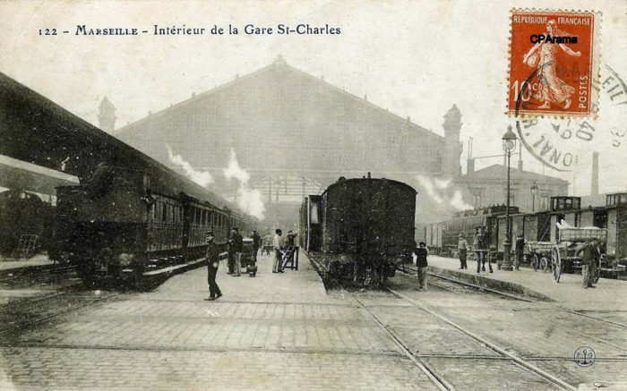

Les batiments originaux
La première gare est construite en 1848 pour l'ouverture de la ligne PLM (Paris - Lyon - Marseille). La gare actuelle est bâtie de 1893 à 1896 par l'architecte Joseph-Antoine Bouvard. Sous forme d'un corps de bâtiments en U autour d'une grande verrière, la gare surplombe la ville depuis le plateau Saint-Charles. Le long des quais, les bâtiments au nord accueillent les arrivées et ceux au sud les départs. En arrière, le long de l'actuel boulevard Voltaire, se situe une gare de marchandises qui est utilisée jusque dans les années 1990 par le Sernam. L'escalier monumental, reliant mieux la ville à sa gare alors isolée sur un plateau, est projeté en 1911. Réalisé en 1926, il est orné de sculptures sur les thèmes des colonies d'Afrique et d'Asie. À cette époque, un premier entresol est aménagé sous l'esplanade devant le bâtiment principal.
Les agrandissements des annees 1970 et 1980 : une nouvelle envergure
Lors du premier agrandissement réalisé après la Seconde Guerre mondiale, les bâtiments nord sont détruits pour créer de nouveaux quais et un nouvel édifice est construit pour abriter la direction régionale de la SNCF. Un projet d'aménagement du quartier entier, incluant la démolition de la halle historique, est entamé mais interrompu par le choc pétrolier de 1973 : seule la première tranche des travaux sera construite, le nouveau bâtiment de la direction régionale, bâti sur des piliers placés à même les quais et surnommé par les cheminots « le camembert » à cause de ses courbes caractéristiques. L'entresol est progressivement aménagé pour accueillir, entre autres, la billetterie ; des parkings sont créés contre la butte au sud de la gare. L'esplanade est transformée en « dépose-minute » pour les bus et les taxis. Jusque dans les années 1990, outre le « camembert » en « pile d'assiettes » de la direction régionale, la façade principale de la gare est sous un auvent métallique accueillant la sortie du métro.
Les restructurations et requalifications depuis 1990 : une nouvelle gare pour un quartier en mutation

À la fin des années 1990, se fait sentir le besoin de restructurer une gare ayant perdu de sa superbe, rendue non fonctionnelle par des aménagements successifs issus des années 1970 et 1980, et en butte à la saleté et à l'insécurité. Un grand projet de réaménagement est programmé, incluant la gare routière et les quartiers environnants pour l'arrivée du TGV Méditerranée. Par ailleurs, la gare est incluse dans le projet d'aménagement Euroméditerranée. Ce projet de très large envergure vise les secteurs de la ville le long du port de commerce et se prolonge jusqu'aux quartiers jouxtant la gare (la Belle de Mai et Saint-Lazare en particulier). Outre le fait d'améliorer le pôle principal de transport de l'agglomération, le projet vise une requalification des bâtiments et de leurs abords pour une meilleure intégration à un quartier amené à être restructuré. Le projet est signé par l'architecte Jean-Marie Duthilleul, ainsi que Setec Tpi pour la verrière, la façade en pierre précontrainte et la charpente métallique de la toiture. Une première tranche est livrée en juin 2001 incluant le réaménagement des parkings souterrains, d'une partie de l'entresol et de l'ancien hall (dont la billetterie), d'une partie des bâtiments sud (consigne et salles d'attente) et des quais. La restructuration des quartiers environnants est toujours en cours mais une partie de la modification des circulations est faite avec l'ouverture d'un tunnel sous la gare reliant la ville à l'autoroute A 7 et la mise en place d'un dépose minute en cul-de-sac le long des bâtiments sud, libérant l'esplanade devant la gare de toute circulation automobile. La façade principale du bâtiment est rénovée avec la suppression de l'auvent.